In this assignment, you will explore topics on geometric modeling
covered in lecture. You will build Bezier curves and surfaces using de
Casteljau algorithm, manipulate triangle meshes represented by half-edge
data structure, and implement loop subdivision.
Part 1: Ray Generation and Scene Intersection
Generating Rays and Primitive Intersection
We determine the original point's position and project it onto the
screen. To find
new_x and
new_y, we
center the original rectangle screen defined by (0, 0) and (1, 1) at (0,
0), resulting in (x - 0.5, y - 0.5). The relative positions of
x and
y in the
original screen remain the same as
new_x and
new_y. This
leads to the equations:
\[\frac{(x - 0.5)}{1} = \frac{\text{new_x}}{(2 \cdot
\tan(\text{radians(hFov) * .5}))}\] \[\frac{(y - 0.5)}{1} =
\frac{\text{new_y}}{(2 \cdot \tan(\text{radians(vFov) * .5}))}\]
We obtain
Vector3D ray_vector = Vector3D(new_x, new_y, -1.0). After obtaining the position of the projected point, we calculate the
direction vector of
result_ray
using matrix multiplication
c2w * ray_vector. Finally, we set the visible boundary for this ray between nClip and
fClip, which we will update later.
Process walkthrough
Ray generation begins with casting rays from the virtual camera into the
scene. Each ray is defined by its origin (the camera's position) and a
direction (pointing through a pixel on the camera plane). These rays
traverse the scene, interacting with objects along their directions. The
primitive intersection stage involves determining if a ray intersects
with any geometric primitives(sphere, triangle, etc.) in the scene. This
process employs the function
Triangle::intersect
or
Sphere::intersect. When an intersection is detected, information about the point of
intersection, such as its position, surface properties, and material
characteristics, will be upadted in the struct
Intersection* isect.
triangle intersection algorithm
We used the Moller Trumbore Algorithm that we have discussed in lecture.
After following the steps and get the vector containing [t, alpha,
beta], we first see if t is between
r.min_t and
r.max_t and if
alpha and beta are within [0, 1]. If any of the condition fails, the
intersection is not suppose to happen and we return false. If both
conditions are met, we update the intersection information to
Intersection* isect, including the filed t, primitive, bsdf and n(calculated by doing
barycentric interpolation with the current three norms and the alpha,
beta, gamma values that we calculated above.) We also updated ray.max_t
to t.
Screenshots
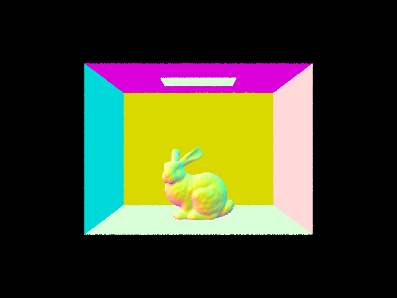
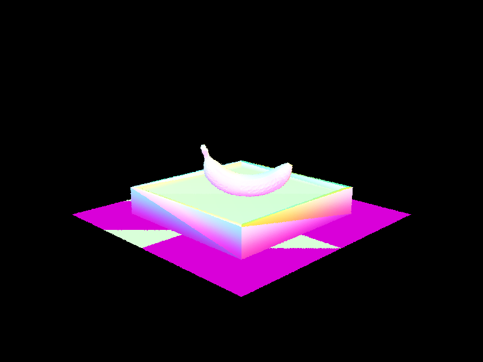
Part 2: Bounding Volume Hierarchy
BVH construction algorithm
Following are our steps for constructing BVH
Compute the Bounding Box (bbox): We start by computing the
bounding box that encloses all the primitives between
start and
end. The
bounding box is computed by iteratively expanding it to include the
bounding boxes of individual primitives using function
bbox.expand.
Choose Splitting Axis: We then choose the splitting axis based
on the maximum extent of the bounding box. The axis is selected to be
the one along which the bounding box has the maximum size. This
heuristic helps achieve a more balanced partitioning.
Check Leaf Node Condition: If the number of primitives in the
current range is less than or equal to
max_leaf_size, the current node becomes a leaf node. We just create a leaf node
and set its start and end field with the input
start and
end.
Partition Primitives: If the number of primitives exceeds
max_leaf_size, we partition the primitives along the chosen axis. We used the
function
nth_element
to partially sort the primitives based on their centroids along the
selected axis. This effectively places the median primitive at the
position that separates the primitives into two groups.
Construction: Then, we recursively constructs the left and
right child nodes of the current node, each covering a subset of the
primitives. The left child covers the range [start, start + size/2),
and the right child covers the range [start + size/2, end]. Finally,
we return the current node.
screenshots of large images with normal shading
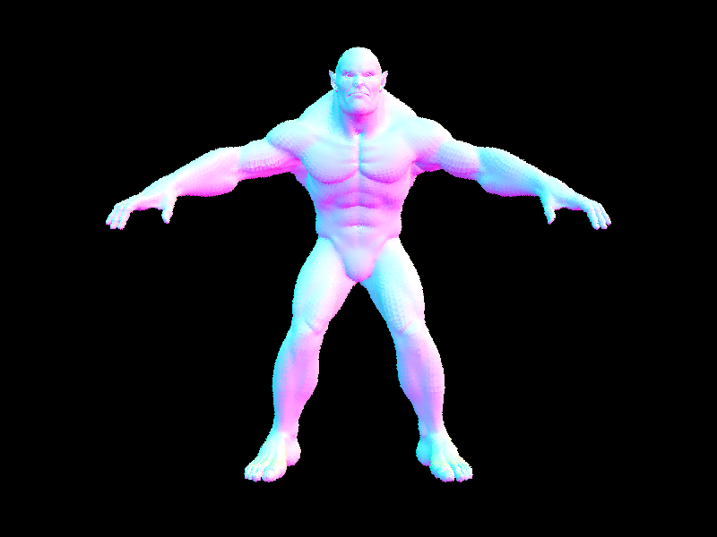
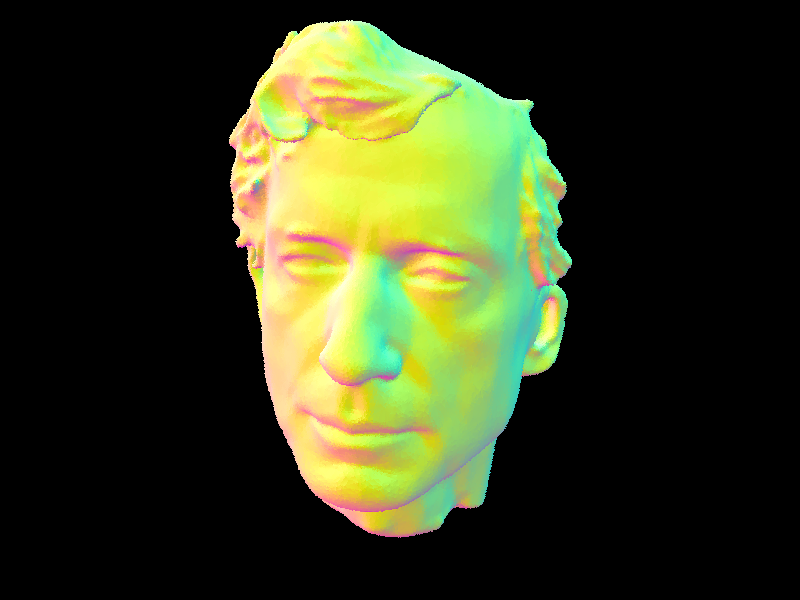
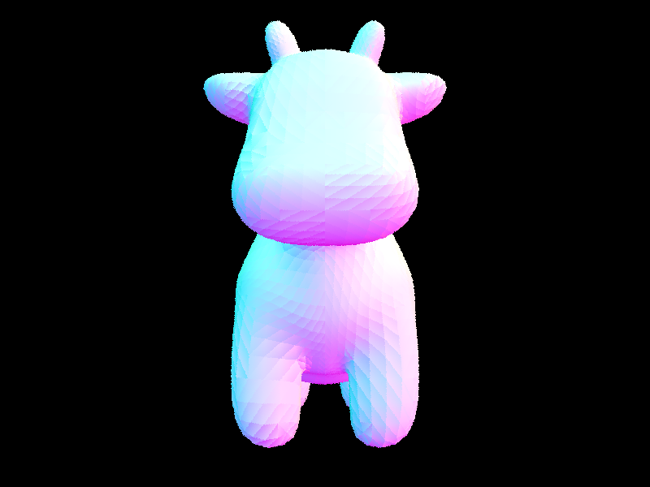
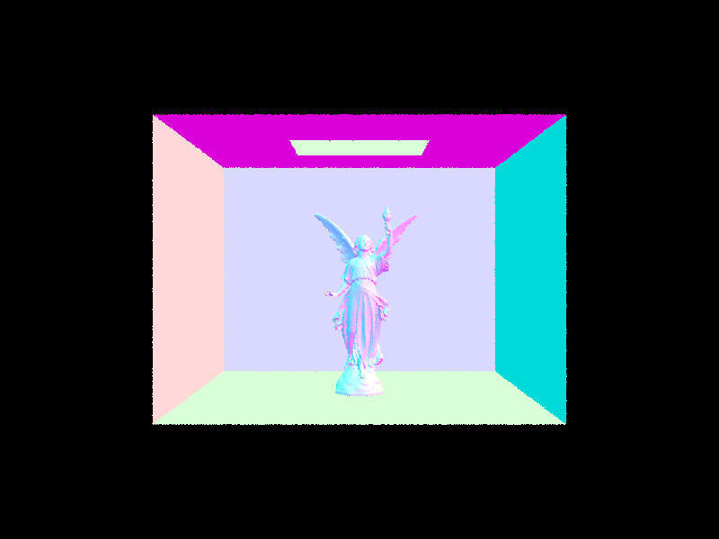
Render Time Comparison Analysis
Before implementing BVH acceleration, the rendering time for cow was
close to a minute. After implementing BVH, the rendering time for cow is
around 1 second. And all the other large .dae files(the ones above) all
takes at most 2 seconds to complete. The speed-up is much faster, we
think this is because once a ray does not intersect with a node's bbox,
we do not test for intersection between the ray and the primitives
contained by the node, which saves us a lot of computation.
Part 3: Direct Illumination
Walkthough for
Vector3D PathTracer::estimate_direct_lighting_hemisphere
Sampling Loop for Direct Lighting: We start a num_samples times
loop to sample the hemisphere around the hit point, considering the
lights in the scene.
Sample Light: Within the loop, we get the sampled light by
calling
isect.bsdf->sample_f. This function returns the sampled reflected direction wj and the
corresponding probability density function (pdf). Then, we multiply
the direction vector by
o2w to get
the transformed vector and normalize it. Then, we construct the
sampleray using hit_p as origin and the normalized vector as direction
with its min_t set to EPS_F and max_t set to INF_D.
Check for Intersection: If sampleray intersects with the scene,
we calculate the contribution for L_out by this sampleray using the
function
lightIsect.bsdf->get_emission() * f * abs_cos_theta(wj) / pdf
and add it to L_out.
Normalizing Output: Finally, we return the light estimator
equals to L_out / num_samples.
Walkthough for
Vector3D PathTracer::estimate_direct_lighting_importance
Sampling Loop for Direct Lighting: We start a num_samples times
loop to sample the hemisphere around the hit point, considering the
lights in the scene.
Sample Light: Within the loop, we get the sampled light by
calling
isect.bsdf->sample_f. This function returns the sampled reflected direction wj and the
corresponding probability density function (pdf). Then, we multiply
the direction vector by
o2w to get
the transformed vector and normalize it. Then, we construct the
sampleray using hit_p as origin and the normalized vector as direction
with its min_t set to EPS_F and max_t set to INF_D.
Check for Intersection: If sampleray intersects with the scene,
we calculate the contribution for L_out by this sampleray using the
function
lightIsect.bsdf->get_emission() * f * abs_cos_theta(wj) / pdf
and add it to L_out.
Normalizing Output: Finally, we return the light estimator
equals to L_out / num_samples.
Comparison and Analysis of uniform hemisphere sampling and lighting
sampling
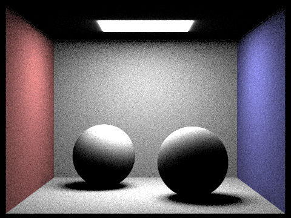
CBspheres_lambertian.dae using estimate_direct_lighting_hemisphere
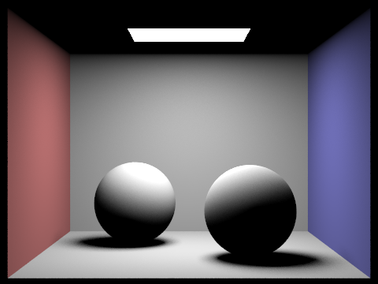
CBspheres_lambertian.dae using estimate_direct_lighting_importance
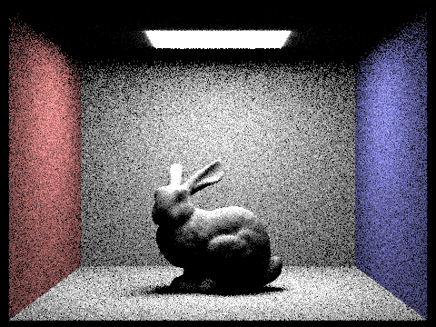
CBbunny.dae using estimate_direct_lighting_hemisphere
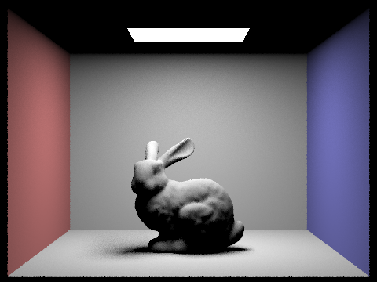
CBbunny.dae using estimate_direct_lighting_importance
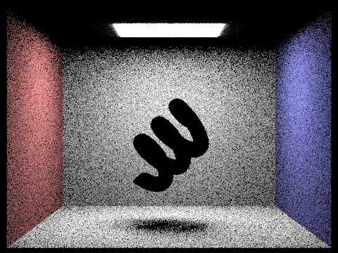
CBcoil.dae using estimate_direct_lighting_hemisphere
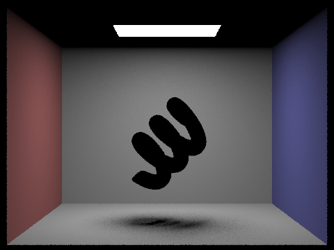
CBcoil.dae using estimate_direct_lighting_importance
CBgems.dae using estimate_direct_lighting_hemisphere
CBgems.dae using estimate_direct_lighting_importance
Uniform hemisphere sampling provides an unbiased, yet more visually
noisy representation, especially in regions where there are intricate
interactions between light and surfaces. In contrast, light sampling, by
strategically sampling directions based on the light source, tends to
produce smoother results with reduced noise levels in areas affected by
soft shadows.
Comparison Between Noise Levels in Soft Shadows Using Lighting Sampling
CBbunny.dae l = 1, s = 1CBbunny.dae l = 4, s = 1
CBbunny.dae l = 16, s = 1CBbunny.dae l = 64, s = 1
As the number of light rays (l) increases in the rendering process with
light sampling, the transitions of shadows become smoother and the
presence of noisy pixels diminishes. This improvement is attributed to
the increased number of samples per pixel, leading to more accurate and
refined estimations of soft shadows, resulting in a visually smoother
and less noisy appearance in the illuminated regions of the scene.
Part 4: Global Illumination
Implementation
The function takes an iterator pointing to a halfedge as input. This
halfedge represents the edge that will be flipped.
Steps
Check for Boundary Edge: first checks if the input edge is a boundary
edge. If it is, flipping is not possible, so the function simply
returns the original edge iterator.
Get Halfedge: obtains iterators for several halfedges surrounding the
edge to be flipped, namely 3 halfedges for Left and 3 halfedges for
Right. These iterators are used to update connections between
halfedges after the flip.
Get Vertex: obtains iterators for the four vertices in the diagram
connected to the halfedges. These iterators are used to update the
vertices' halfedge pointers after the flip.
Get Face: obtains iterators for the two faces, namely Left and Right,
that the two halfedges being flipped belong to. These iterators are
used to update the faces' halfedge pointers after the flip.
Update Halfedge Neighbors (via
setNeighbors()): updates the neighbor pointers of the four halfedges involved in
the flip. This step reconfigures the connections between halfedges to
reflect the flipped edge.
Update Halfedge Next Pointers: updates the "next" pointers of two
halfedges to reverse their order in the counter-clockwise direction
around their respective faces.
Update Vertex Halfedge Pointers: updates the "halfedge" pointers of
the four vertices involved in the flip to point to their new
corresponding halfedges after the flip.
Update Face Halfedge Pointers: updates the "halfedge" pointers of the
two faces involved in the flip to point to their new starting
halfedges after the flip.
Return Flipped Edge: The function returns the iterator pointing to the
original edge, which now represents the flipped edge.
Debugging
We used the diagram to help us understand the connections between the 4
halfedges and 4 vertices involved in the flip. We also used the diagram
to help us understand the connections between the 2 faces involved in
the flip.
Result
CBspheres_lambertian.dae using estimate_direct_lighting_hemisphere
CBspheres_lambertian.dae using estimate_direct_lighting_importance
dragon.dae using estimate_direct_lighting_hemisphere
dragon.dae using estimate_direct_lighting_importance
Comparison between uniform hemisphere sampling and lighting sampling
noise levels in soft shadows
Comparison between uniform hemisphere sampling and lighting sampling
Task 5: Edge Split (15 pts)
Steps
Please refer to the diagram below for the notations of the vertices,
halfedges and faces as we have created new ones.
For your reference, vertices starting with "M" means "from the
Midpoint", "U" means "from the Upper face", "D" means "from the Down
face", "L" means "from the Left face", "R" means "from the Right face".
Create New Mesh Elements: The function first creates several new
elements to be inserted into the mesh during the split:
A new vertex ("MID") to represent the midpoint of the split edge.
Three new edges ("MD", "MB", "MA") to form the new edges after the
split.
Six new halfedges ("UR3", "DR3", "DR0", "DL0", "DL3", "UL3") to
connect the new vertex and edges.
Two new faces ("UP", "DOWN") to fill the gaps created by the
split.
Get Iterators for Existing Elements: The function obtains iterators
for existing halfedges, faces, and vertices surrounding the edge to be
split. These iterators are used to update connections after the split.
Position the New Vertex The position of the new vertex ("MID") is set
to the average of the positions of the two original vertices connected
by the edge.
Set Initial Halfedge Pointers: The "halfedge" pointer of the new
vertex ("MID") is set to point to one of the original halfedges
("L0_OLD"). The "halfedge" pointer of the original vertex's vertex is
updated to point to a new halfedge on the opposite face ("R1_OLD").
Set Face Halfedge Pointers: The "halfedge" pointers of the new and
existing faces are updated to point to appropriate halfedges, ensuring
correct face-vertex relationships.
Set Edge Halfedge Pointers: The "halfedge" pointers of the new edges
are set to point to their corresponding halfedges.
Update Existing Halfedge Neighbors: The neighbor pointers of the
existing halfedges are modified to accommodate the new vertex and
edges, maintaining mesh connectivity.
Set New Halfedge Neighbors: The neighbor pointers of the new halfedges
are set to correctly connect them to the existing mesh elements,
forming the new edges and faces.
Return the New Vertex: The function returns an iterator pointing to
the newly inserted vertex ("MID").